季節
春
東北地方では４月下旬に桜が満開になります。人々はこの時期、絵のように美しい風景を楽しみます。
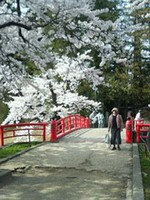 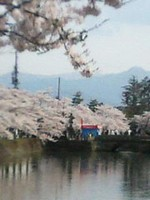 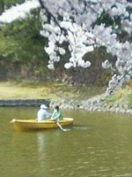 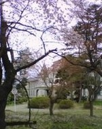
夏
日本では初夏には梅雨という雨季に入り、たくさん雨が降ります。梅雨には、紫陽花が美しく咲き揃います。
夏は様々なお祭りが開催される季節です。小野川は蛍の生息地として知られており、多くの人々が蛍を見にこの地方の町を訪れます。
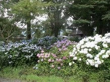
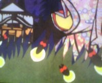
秋
秋には木の葉が赤、黄、茶色に色づきます。人々は温泉とともに紅葉狩りも楽しみます。
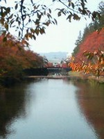 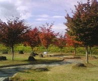 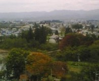
冬
東北地方は雪の多い地域です。冬には山も町もすっぽり雪に埋もれます。 庭の雪景色を見ながら温泉に入るのはまた格別です。

 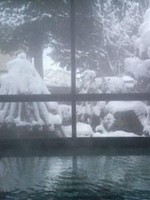
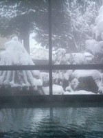